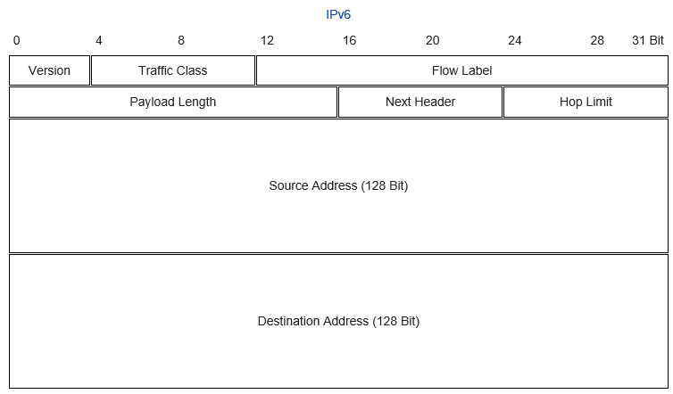

Headeranalyse
Netzwerktraffic-Analyse mit Wireshark
1


Agenda
•
Grundlagen der Header-Analyse
–
Warum ein Model
–
OSI-Modell
–
Aufbau von Headern
• Encapsulation
• Aufbau von Headern
–
Headeranalyse
• IPv4 / v6
• TCP / UTP
• ARP / RARP
• NAT
• DNS
• DHCP
• VPN – PPTP
–
Wireshark
• Installation von Wireshark
• Grundlegende Bedienelemente
• Positionierung des Sniffer im Netzwerk
2


Protokolle als Grundlage für die Traffic-Analyse
•
Die Verbindung zwischen zwei Rechnern ist nicht so einfach, wie es erscheint.
•
Denn ein Netzwerk benötigt nicht nur eine Architektur, die regelt, wie die einzelnen Geräte
zusammenhängen, sondern auch Standards zur Steuerung der Kommunikation zwischen
unterschiedlichen Systemen. Diese nennt man Protokolle.
•
Protokolle: Standardisierte „Verhaltensweisen“ im Umgang miteinander
•
In der IT dienen Protokolle für die standardisierte Vermittlung von Daten
•
Hierbei gibt es eine Vielzahl von Protokollen (s. Karte der Netzwerkprotokolle), die miteinander
interagieren, um Daten zu vermitteln.
3


Bsp. Telefongespräch:
– Teilnehmer A muss auf der physikalischen Sicht das Medium nutzen, das auch seinem Gesprächspartner B zur
Verfügung steht.
– Er muss die richtige Verbindung wählen, dazu muss der Anschuss von B richtig angeschlossen sein.
– Ist B in einem Firmennetz, muss dieses Netzwerk richtig eingestellt sein, damit der Anruf von A durchgestellt
werden kann.
– A und B müssen dieselbe Sprache sprechen, damit die Informationen zwischen ihnen transportiert werden
können.
– Erst wenn A gewählt hat und mit B verbunden ist, kann er B nach den Informationen fragen, die er braucht.
Dazu muss er sich für die Sitzung identifizieren.
– Da A die Infos nicht selbst lesen kann, muss B sie laut und strukturiert vorlesen. Also muss B einen Text in
Sprache umsetzen, damit A die Informationen bekommt.
– Schlussendlich muss A B mitteilen können, wo die Informationen sind, die er möchte, also auf welchen Ordner
er Zugriff haben möchte.
4


Grundlagen der Traffic-Analyse
Daher muss für die Verbindung zwischen Computern ein Modell entwickelt
werden, mit dessen Hilfe sich die Verbindung zwischen zwei oder mehr
Parteien erklären lässt.
Dabei sollte dieses Modell aus mehreren miteinander zusammenhängenden
Schichten bestehen, die eine Information durchläuft, damit sie von einem
Teilnehmer zum andern kommt.
Durch eine solche Modellannahme wird die tatsächliche Komplexität reduziert
und es wird einfacher, den Ablauf der Kommunikation zu beschreiben.
5


Warum ein Modell?
Mit Hilfe solcher Modelle ist es möglich,
– gezielt Protokolle für eine einzelne, klar definierte Aufgabe zu entwickeln,
– diese so zu entwickeln, dass eine Wechselwirkung auf Protokolle in
anderen Schichten unterbleibt,
– die Komplexität der tatsächlichen Handlung verringert und
– eine größtmögliche Flexibilität für die Implementation neuer Protokolle zu
bieten.
6


Das OSI 7-Modell
Das OSI 7-Modell besteht aus sieben Schichten:
OSI-Modell (deutsch)
OSI-Modell (engl.)
Beispiel / Protokoll
Schicht 7
Anwendungsschicht Application Layer
Informations-
auswahl / HTTP
Schicht 6
Darstellungsschicht
Presentation Layer Lesen/Sprechen /
HTML
Schicht 5
Sitzungsschicht
Session Layer
Identifizierung /
NAT
Schicht 4
Transportschicht
Transport Layer
Verständnis-
kontrolle / TCP
Schicht 3
Vermittlungsschicht Network Layer
Interne Durchwahl
/ IP
Schicht 2
Datensicherungs-
Data Link Layer
Anschlussnummer
schicht
/ MAC
Schicht 1
Physikalische
Physical Layer
Auswahl des
Schicht
Medium / 568 b
7


Das OSI 7 Modell
Über sog. Service Access Points (SAP), eine
standardisierte Schnittstelle zwischen jeder
Schicht, stellt die einzelne Schicht N ihrer
nächsthöheren N+1 die vorhandenen Dienste
zur Verfügung.
Bei der Kommunikation zwischen einzelnen
PCs verhält sich Schicht N so, als ob sie direkt
mit derselben Schicht auf dem
Partnerrechner kommunizieren würde,
faktisch durchläuft ein Datenpaket immer alle
Schichten unterhalb von N.
Nur die direkt aneinander angrenzenden
Schichten kommunizieren miteinander, es
können keine Schichten übersprungen
werden.
8


Das OSI 7 Modell
Die zwischen den einzelnen Schichten weitergeleiteten Daten werden als Protokolldateneinheiten (PDU
für Protocol Data Unit) bezeichnet, die sich wie folgt zusammensetzen:
Header
Daten (Payload)
Trailer
Besitzt die
Sind die
Enthält
Protokoll-
einzelnen
Prüfsummen, um
Kontroll-
Nutzdaten
die Stabilität der
Informationen
(Payload oder
Daten (Kohärenz)
des jeweiligen
SDU Server Data zu überprüfen.
Dienstes der
Unit).
Schicht.
Dabei dienen hochstandardisierte Schnittstellen (Service Access Points) zwischen den Schichten als
Übergabepunkt
9


Das OSI 7 Modell
Dabei erhalten die Daten bei der Übertragung pro durchlaufener Schicht je einen
weiteren Header, ab Schicht 2 dann auch einen Trailer zur Datensicherung.
10


Encapsulation
• Protokolle aus höheren
Schichten (5-7) nutzen die
Dienste der Protokolle der
niederen Schichten (1-4).
• Die Protokollinformationen
aller Protokolle sind
notwendig für den
reibungslosen Datentransfer
• diese werden transferiert
durch Encapsulation
11


Encapsulation
•
Grundlegend bestehen Header aus einer ganzen Reihe von Daten
– Je tiefer die Schicht, desto mehr Elemente besitzt der Header (sog. Encapsulation)
• Bsp.: IP-Header
Schicht / Bezeichnung des Headers
Grundlegender Aufbau des Headers
Anwendungsschichten: Daten
Daten
Transportschicht: Datagramm
TCP-Header Daten
Netzwerkschicht: Paket
IP-Header TCP-Header Daten
Datenverbindungsschicht: Frame
Eth-Header IP-Header TCP-Header Daten
Bitübertragungsschicht: Bits
1000101011011010010001011100…
12


Encapsulation
• Encapsulation: Daten der
Protokollheader der höheren
Schicht in Protokoll der niederen
Schicht verpacken
Sender und
• Analogie: Brief im Briefumschlag
Empfänger
13


Decapsulation
• Dabei durchlaufen die einzelnen
Protokollstacks vertikal alle OSI-
Schichten und die
Informationen der höheren
Dienste werden von den
Protokollen der niedereren
Dienste encapsulated
(„eingepackt“)beim Sender und
beim Empfänger decapsulated
(„ausgepackt“).
• Analogie: Brief
14


Encapsulation - Essentials
15


Decapsulation - Essentials
16


Datentransfer – Header als Informationsträger
Layer 5 - 7
Email (POP/IMAP)
(+ Verschlüsselung)
Layer 4
TCP: Port,
Segmentnr.
Source/Dest.
Layer 3
IP
Layer 2
Source/Dest.
MAC, FCS
Layer 1
Bitstrom
17


Arbeitsauftrag
Beschreiben Sie mit eigenen Worten, welche Schichten ein Datenpaket von der Quelle zur Senke
durchläuft und was die jeweilige Schicht dabei macht. Nutzen Sie hierzu das Elektronik-Kompendium unter
http://www.elektronik-kompendium.de/sites/kom/0301201.htm.
18


Aufbau von Headern
19


Aufbau von Headern
•
Werden grundlegend als Strukturgramm mit Blöcken von 32 Bit Länge dargestellt
•
Dabei steht jede Zeile des Strukturgramms für einen 32-Bit-Block
– Bsp.: IP-Header
20


Aufbau von Headern
•
Dabei sind die Felder innerhalb des Strukturgramms je nach Protokoll unterschiedlich → Bei
Unsicherheit nachsehen!
•
Protokolle sind einem bestimmten Port, d.h. einer (meist fest dem Dienst zugeordneten)
Schnittstelle zugeordnet, über die die Kommunikation zwischen Quelle und Senke abläuft.
•
Unterscheidung der Ports in:
– Die „well-known ports“ von 1 – 1023: Fester Dienst (Protokoll)
– Die „registerd ports“ von 1024 – 49151: Unterschiedliche Dienste
– Die „dynamic ports“ von 49152 – 65535: Offen für alle Verbindungen
•
Schreibweise: 192.168.10.1:80
IP
Port (TCP)
21


Arbeitsauftrag
•
Bearbeiten Sie das Arbeitsblatt mit den Aufgaben zu Protokollen und Ports.
22


Vorstellung verschiedener
Header
23


Der IPv4-Header
• Für viele Dienste zur Verbindung zwischen Computern wird eine
IP-Verbindung genutzt.
• Da TCP/IP die älteste verbindungsorientierte Protokoll-
Familie darstellt, ist Kenntnis der Bestandteile dieses Headers
sehr wichtig.
• Dabei sind die Header von IPv4 und IPv6 unterschiedlich.
24


Bestandteile eines IPv4 Headers
•
Version: IPv4
•
IP-Header-Length (4 Bit lang → max. 60 Byte Headerlänge)
•
Type of Service: Priorisierung (D=Delayed, T=Throughput,
R=Reliable)
•
Total Length: Gesamtlänge des Pakets
•
Identification: Zuordnung zu einem fragmentierten
Datentransfer
•
Flags: Steuerung der Fragmente
•
Fragment offset: Stellung des Pakets innerhalb eines
größeren Datenpakets
•
Time To Live: Lebenserwartung des Pakets bei der
Übertragung
•
Protocol: Welches Protokol der höheren Schicht
verarbeitet das Paket weiter?
•
Header Checksum: Prüfsumme für Kohärenz
•
Source Address: Quell-Adresse
•
Destination Address: Zieladresse
•
Options and Padding: ggf. werden für Routing und
Fehlerbehebung weitere, optionale Informationen
mitgegeben (RFC 791), die übrigen Bits werden durch
Nullen aufgefüllt (sog. Padding)
25


Der IPv6-Header
• IPv6 nutzt hexadezimale Adressen, daher sind die Adressfelder größer (je
128 Bit).
• IPv6 benutzt einen Header mit 40 Bytes (320 Bits).
• Optionale Informationen (Verschlüsselung, MobileIPv6, Platzhalter) werden
in einem separaten Bereich des Headers gespeichert (Extention Header).
• Wird ein Extention Header genutzt, wird der Header auf 64 Byte bzw. ein
Vielfaches von 64 Byte vergrößert.
26



Bestandteile eines IPv6-Headers
• Version: IPv6
• Traffic Class: Vergleichbar IPv4 ToS
• Flow Label: vgl. QoS
• Payloadlength: Länge des Ipv6-
Headers in Byte (mit Erweiterung,
sofern vorhanden)
• Next Header: Identifizierung des
nächsten Kopfdatenbereichs oder
des benutzten Protokolls
• Hop Limit: vgl. TTL
• Source / Destination Adress: Quell-/
Zieladresse
27


TCP-Verbindungsaufbau
• Verbindungsaufbau mit TCP (sog.
„three way handshake“):
– Anfrage an Zielrechner mit Dienst,
Portnummer und Bitte zur
Synchronisation (SYN) mit einer
spezifischen Vorgangsnummer
(ISN=Initial Sequence Number)
– Ziel bestätigt bei Vorhandensein des
Dienstes durch Rückantwort; dabei
wird ACK-Signal gesetzt (als ISN+1)
– Zum Verbindungsaufbau wird
Bestätigung geschickt von Quelle mit
ACK+1, ISN+1
28


Aufbau des TCP-Headers
•
Source port / destination port: Quell- und Zielport des
angefragten Dienstes
•
Sequence Number: Sortiert die TCP-Anfragen und setzt die
SYN-Flag
•
Acknowledgement Number: Gibt Sequenznummer des
Empfängers wieder, wenn ACK vorhanden
•
Data Offset: Lange des Headers in 32-Bit-Blöcken, gibt
Startadresse wieder
•
Reserved: Momentan nicht genutzt
•
Control Flags: Dienen zur Kennzeichnung bestimmter
Eigenschaften bei der Datenverarbeitung, z.B.: ECE=Netzwerk
überlastet, Senderate reduzieren; CWR=Überlast entfernt;
URG=Dringend; ACK; PSH=Push; RST=Reset; SYN; FIN
•
Window: Anzahl der Daten-Oktette, die von ACK gesendet
worden sind
•
Checksum: Dient zum Erkennen von Übertragungsfehlern
•
Urgent Pointer: Nur gültig mit URG-Flag; gibt zusammen mit
Sequenz-Nummer die erste Position der Bytes nach dem
Urgent Pointer
29


Beispiel eines Datentransfers mit TCP
• Bei Files über 1500 Byte
werden diese segmentiert.
• Dabei werden die
Nutzerdaten zuerst in eine
Puffer geladen („Buffering“)
• Über die Sequenznummer
bei IP werden die einzelnen
Segmente zuordbar.
• Bei Signal Loss oder Buffer
Overflow wird ein Signal zur
Quelle geschickt.
30


Der UDP-Header
• UDP ist ein verbindungsloses Protokoll, d.h. es hat keine
Sicherungssysteme, keine Fehlerüberprüfung und keine
Verschlüsselung.
• Vorteil: Verbindung wird unempfindlicher gegenüber Packet Loss
→ Sprach- / Medienübertragung
• Nachteil: Bei Packet Loss kommt es zu Qualitätsverlust.
31


Aufbau von UDP-Headern
• Sorce / Destination Port: Port der
Quelle / Senke, je nach Protokoll
• UDP-length: Gibt Länge des
Datagramms in Oktetten an, d.h.
Max 216-1 Byte = 65.535 Byte
Payload
• UDP Checksum: ggf. mitgelieferte
16 Bit große Prüfsumme
• Meist wird vor einen UDP-Header
ein IP-Header für den
Verbindungsaufbau angehängt.
32


Der ARP-Header
• Adress Resolution Protocoll dient zur Ermittlung der MAC-
Adresse bei bekannter IP-Adresse.
• Wird ausschließlich bei IPv4 genutzt, bei IPv6 dient hierzu
Neighbour Discovery Protocoll.
• Diese Daten werden in einer Routingtabelle gespeichert.
• Bei Fehlern dieses Protokolls kommt keine Verbindung zustande.
33


Ablauf des ARP-Request
• Da ARP-Header sehr klein sind
(ca. 30 Byte), wird mit Padding
das Paket aufgefüllt.
• ARP ist leicht an dem Typfeld im
Ethernetframe 0X0806 (2054)
erkennbar.
• ARP erkennt aus der ARP-Tabelle
des Hosts die gesuchte IP.
34


RARP
• Mit RARP (Reverse Adress Resolution Protocoll) kann von einer Mac-
Adresse auf eine unbekannte IP-Adresse geschlossen werden.
• Der Header ist im Ethernet-Typfeld mit 0x8035 gekennzeichnet.
• RARP funktioniert nur innerhalb eines Subnetzes.
• Bei fehlerhaftem ARP /RARP kann kein Routing stattfinden. Meist liegen
falsche manuelle Routingtabellen vor.
35


Network Access Translation (NAT)
•
Dient zur automatischen Zuordnung der Adressen in einem Rechnernetzwerk, um verschiedene
Netze zu verbinden.
•
Zwei Formen:
– Ordnet die IPv4-Adresse einer Quelle in einem Subnetz der öffentlichen Adresse zu (Source-NAT)
– Ordnet Dienste von unterschiedlichen Diensten einer IP zu (z.B. bei Servern, sog. Destination-NAT)
•
Pro Verbindung eine NAT-Session, hierbei werden
– IP der Quelle im privaten Netz mit der IP des NAT-Routers getauscht
– MAC der Quelle im privaten Netz mit der MAC des NAT-Routers getauscht
– Der Router speichert diese Daten, um dann die Antwort an die Quelle im privaten Netz zu versenden.
•
Kann auch genutzt werden, um IPv4 in IPv6 umzusetzen (NAT 64).
36


Domain Name System (DNS)
•
System zur Auflösung von Computernamen in IP-Adressen „Telefonbuch des Internets“
• Beispiel:
FTPServer01.Institut-fuer-Festkörperphysik.frauenhofer.de.
entspricht der Informationsorganisation:
HOSTNAME.SUBDOMAIN.SECONDLEVELDOMAIN.TOPLEVELDOMAINROOT
– Hostname ist der eindeutige Name innerhalb einer Subdomain
– Subdomain ist eine Unterteilung innerhalb einer größeren Einheit (der Second-Level-
Domain)
– Second-level-Domain ist die Schnittstelle zwischen WWW und dem hinter der SLD
stehenden Unternehmen. Diese werden (über NIC und jur. Person) eindeutig zuordbar
verwaltet.
– ROOT entspricht dem Punkt am Ende der Adresse. Auf ROOT-Servern wird die Verbindung
zu den einzelnen Top-Level-Domains gespeichert.
– FDQN (Fully Qualified Domain Name) besteht aus der eindeutigen Kombination eines
Gerätenamens, der Second- und Top-Level-Domain.
37


Domain Name System (DNS)
• Zugänge zu dem einzelnen Rechner werden über DNS-Server
verwaltet.
• An DNS-Datenbanken dürfen keine Veränderungen
vorgenommen werden!
• Diese Datenbanken verwalten dezentral Teile der DNS-Struktur.
– Vorteile: leicht erweiterbar, flexibel, eindeutiger Name innerhalb
hierarchischer Gliederung
38


Domain Name System (DNS)
• Um Rechner zu erreichen, wird einer FQDN eine IP-Adresse zugeordnet
(sog. Host-Datei)
– Beispiel:
[IP-Adresse] [Mindestens ein Leerzeichen] [FQDN], optional #[Kommentar]
192.168.0.1 server01.testserver.tv.
• Diese Daten werden auf einem DNS-Server hinterlegt, der weitere
Informationen speichert (in der sog. Zonendatei).
• Wurde eine Anfrage erfolgreich durchgeführt, werden Daten im DNS-Cache
gespeichert. Bei erneuter Anfrage an den selben Zielrechner werden diese
Daten für den Verbindungsaufbau verwendet.
39


Domain Name System (DNS)
• Abfragevorgang auf eine unbekannte Adresse:
– Adresse muss in eine IP aufgelöst werden → DNS-Querry-Request an
nächsten DNS-Server. Dieser kann
• den Cache überprüfen
• überprüfen, ob die Adresse in seiner Zonendatei ist
• an einen anderen DNS-Server weiterleiten
• eine iterative (d.h. wiederholte) Abfrage durchführen
40


Domain Name System (DNS)
•
Iterative Abfrage (Theoretisches Model)
1.
Programm stell Anfrage nach IP an lokalen Client.
2.
Die gesuchte FQDN wird an den dem Client zugeordneten
DNS-Server geschickt (rekursive Anfrage).
3.
Befindet sich die FQDN nicht im DNS-Cache, stellt dieser
eine iterative Anfrage an einen der ROOT-Server.
4.
Dieser verweist dann an den entsprechenden Top-Level-
Domain-Server.
5.
Eine weitere iterative Anfrage an den TLD-Server für die
FQDN.
6.
Diese Antwort erhält der DNS-Server und speichert sie im
Cache.
7.
Diese Antwort wird an den Client übermittelt.
8.
Der Client nutzt diese Daten für das entsprechende
Programm.
•
Voraussetzung für iterative Abfragen sind Internetzugang und
aktuelle Datei named.root
41


Domain Name System (DNS)
• Eine aktuelle Datei named.root wird bei Windows im Verzeichnis
DNS gespeichert.
• Es ist möglich, die von Windows bereitgestellte Liste komplett zu
blockieren (gar kein Surfen mehr möglich) oder eine
eingeschränkte Liste bereitzustellen, mit der nur bestimmte
Webseiten besucht werden können. Problem: Kann leicht
umgangen werden.
42


Domain Name System (DNS)
• Die Adressauflösung kann entweder als Forward Lookup (FQDN
bekannt, IP gesucht) oder als Reverse Lookup (IP bekannt,
FQDN gesucht) durchgeführt werden.
• DNS kann statisch (mit Einstellungen von Hand) oder (wesentlich
häufiger) dynamisch durchgeführt werden.
• Bei dynamischem DNS wird ein weiteres Protokoll genutzt,
DHCP
43


DHCP für D-DNS
• DHCP (Dynamic Host Configuration
Protocol) dient zur dynamischen
Adressverwaltung. Der Client wird
von DNS-Server bei jeder neuen
Anmeldung registriert (sog. lease).
• Arbeitet auf Ports 67 und 68.
• DHCP nutzt zur1. und 2.
Verbindung UTP, da es ungerichtet
an den nächsten (eingestellten)
DNS-Server
• Maximale Paketgröße DHCP: 576
Byte
44


Aufbau des DHCP-Headers
•
op (1 Byte): zeigt request (1) oder reply (2)
•
htype (1 Byte): Netztyp (z.B. Ethernet)
•
hlen (1 Byte): Länge der physikalischen Netzadresse (6 = MAC)
•
Hops (1 Byte): Anzahl der DHCP-Relay-Agents im Netz
(optional)
•
Transaction Identifier (xid, 4 Byte): ID der Client-Server-
Verbindung
•
Secs (2 Byte): Zeit seit Verbindungsaufbau
•
Flags (2 Byte): Zeigt, ob Client gültige IP besitzt, 2. Byte für
Adresserweiterung reserviert
•
IP-Address (je 4 Bytes): Je die Client- und Server-Adresse sowie
die Adresse des DHCP-Agents
•
Client Hardware Address (chaddr, 16 Byte): MAC des Client
•
Server Host Name (sname, 64 Byte): Name des DHCP-Server
(optional)
•
Boot File Name (file, 128 Byte): Name der Datei, die vom
Server übertragen wird (mit TFTP), optional
•
options (variabel, max. 312 Byte): Beinhaltet DHCP-Parameter
und Optionen
45


VPN
• VPN (Virtual Private Network):
Sicherer Zugriff auf das (Firmen-)
Netzwerk von außerhalb des
Netzwerks
• Bei Zugriff auf Netzwerk von Außen
wird mit speziellen Protokollen ein
verschlüsselter „Tunnel“ geschaffen
• Die Daten werden durch spezielle
Authentifizierungen (in Form von
Header-Bestandteilen) und
Verschlüsselung gesichert
46


VPN-Aufbau
• VPN nutzt zum Aufbau entweder PPTP
(Point-To-Point-Tunneling Protocoll)
oder L2TP/IPSec
• PPTP „packt“ die Daten innerhalb eines
IP-Pakets mit Verschlüsselung ein
• Probleme:
– Kann ohne Passwortabfrage, mit
Challenge-
Response-Verfahren oder mit
Authentifizierung durch Smartcard
verwendet werden → unsicher
– Nutzt RC4-Verschlüsselung, Teil des
Schlüssels ist unverschlüsselt → unsicher
– PPTP nutzt keinen spezifischen Port →
unsicher bei Übertragung über Gateways
47


L2TP/IPSec bei VPN
• L2TP arbeitet in Kombination mit
IPSec
• Dazu wird dem IP-Header ein L2-
Header zum Verbindungsaufbau
mehrerer VPN-Tunnel
vorangestellt
• L2-Header dient der
Authentifikation, hat keine
Verschlüsselung
48


L2TP/IPSec bei VPN
• IPSec fügt Verschlüsselung hinzu
durch ESP-Header (Encapsulating
Security Payload)
• Dieser wird den Nutzerdaten
vorangestellt
• Kann unterschiedliche
Verschlüsselungssysteme nutzen
(min. DES, Standard AES)
• Jedes Paket wird entsprechend
verschlüsselt → führt zu
Verlängerung der Laufzeit
49


ESP-Header
• SPI: Identifizierung in Verbindung mit
IP-Adresse und Sicherheitsprotokoll
• Sequenznummer: Ansteigende
Nummer, schützt vor Replay
• Payload: Nutzerdaten
• Padding: Durch Chiffre genutzt, um
Daten bis zum Rest des Datenblocks
aufzufüllen (0 – 255 Bytes)
• Länge Füllung (pad length): Anzahl der
padding-bytes
• next header: Identifizierung von ESP
• authentification data: Werte des
Integritätstests
50


IPSec
• IPSec unterscheidet zwischen
Transport- und Tunnelmodus
• Transport: P2P-Verbindung
• Tunnel: Verbindung
zwischen Netzwerken
• Bei Tunnel-Modus werden
die IP-Adressen weiter
enkapselt, äußerer IP-Header
dient der Verbindung
zwischen den „Tunnelenden“,
innerer IP-Header dient zur
Adressierung innerhalb des
Netzwerks
51


Netzwerktraffic analysieren mit
Wireshark
Planung – Installation – Anwendung
52


Wireshark
• Wireshark ist ein Network-Sniffer, d.h. er dient zum Mitschnitt des
Protokollverkehrs innerhalb eines Netzwerksegments.
• Die App nimmt dabei jeden an den Port gerichteten Verkehr auf.
• Dabei können die entsprechenden Daten anhand ihrer Protokoll-Header
analysiert werden → Welche Protokolle verbinden welchen Dienst mit
welchem Rechner innerhalb/außerhalb des Netzwerks
• Dies sind immer sicherheitsrelevante Daten! Niemals Wireshark
„einfach so“ verwenden! Kündigungsgrund / Justiziabel!
53


Wireshark
• Unter https://www.wireshark.org/ kann die aktuelle Wireshark-
Version heruntergeladen werden.
• Bei der Installation von Wireshark wird zusätzlich noch WinPcap
(Library mit den Protokollinformationen) benötigt.
• OpenSource für beinahe alle OS.
54


Erste Schritte
• Startbildschirm zeigt die
abhörbaren Schnittstellen.
• Durch Graph wird
angezeigt, ob Schnittstelle
mit Netzwerk verbunden.
55


Erste Schritte
• Drei Anzeigen bei der
Paket-Analyse
1.
1. Paketliste: Zeigt die
aufgefangenen PDU
2.
2. Paket-Details: Das einzelne,
in 1 angeklickte PDU wird
angezeigt
3. Paket-Rohdaten:
Darstellung des Datensatz
3.
in HEX in 32 Bit
56


Standard-Schaltflächen
Optionen für
Open / Save /
Aufnahme
Close / Reload file
Aufnahme
Paket suchen,
Zeige immer die
voriges, nächstes,
neueste
Übersicht der PDUs
Aufnahme
stoppen
goto No., erstes,
aufgefangene PDU
(Standard)
starten
letztes
57


Filterleiste
• Durch Filter können
schnell die
empfangenen DPUs
gefiltert werden.
• Filter sind z.B.
Protokollnamen
• Dropdown-Menü
hilft.
58


Übungen mit Wireshark
1.
Schalten Sie sämtliche Programme mit Ausnahme von Wireshark aus. Wie viel DPUs kommen bei
Ihnen an pro min?
2.
Schalten Sie jetzt alle Apps ein, die Sie normalerweise eingeschaltet haben. Schneiden Sie diesen
Verkehr für 1 min mit. Was hat sich verändert?
3.
Öffnen Sie die Kommandozeile bei Windows. Starten Sie eine neue Aufnahme in Wireshark und
führen Sie in der Kommandozeile einen Ping aus.
4.
Starten Sie eine weitere Aufnahme in Wireshark. Führen Sie einen Tracert zu google.de aus in der
Kommandozeile.
59


Literatur
Hauser, Bernhard J. 2016: Netzwerkanalyse mit Wireshark 2.0. Haan-Gruiten: Europa-Lehrmittel.
Ulf Lamping, Richard Sharpe, Ed Warnicke 2014: Wireshark Userguide,
unter:https://www.wireshark.org/docs/wsug_html_chunked/, zuletzt besucht am 13.01.21
Dausch, Martin 2014: Netzwerke. Protokolle und Dienste. Bodenheim: Herdt.
60